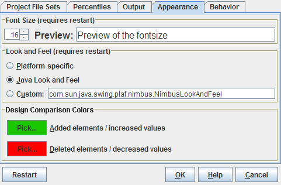

| Prev - Next - Down | SDMetrics - the UML design measurement tool |

Figure 29: Appearance Dialog
Font size
Click the up and down arrows to increase or decrease the font size of SDMetrics' main window, menus, and dialogs. You can judge the resulting size by the preview fields next to the size adjustment controls.
Make sure to change the font size in small steps and "within reason". Too large or too small settings may render the application difficult or impossible to use.
Note: you need to restart SDMetrics for the new font size to become effective.
Look and Feel
To adjust the overall appearance - or look and feel - of SDMetrics, you have the following choices:
Design Comparison Colors
Here you can adjust the colors used to indicate added and deleted elements or increased or decreased measurement values for design comparisons (see Section 4.9 "The View 'Design Comparison'").
Click the button for the color you like to change. This opens a color chooser dialog where you can select the new color.
| Prev | Up | Next |
| Section 4.16.3 "Output" | Contents | Section 4.16.5 "Behavior" |